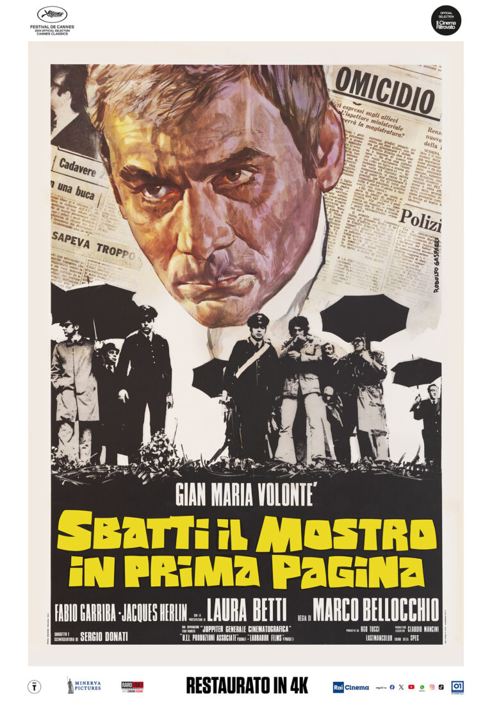

42:21 · 3 OPERE
Polemiche a Pisa.
Il filo del discorso
La polemica pisana su un messaggio attribuito a Iacopo Cavallini diventa per il relatore un caso di rapporto fra stampa, politica e dissenso. Egli rifiuta il linguaggio offensivo del post, ma assume la prima dichiarazione di estraneità come motivo sufficiente per interrompere la discussione e critica titoli, etichette e richieste di dimissioni. Il ragionamento si sposta poi dalla cronaca alla costruzione pubblica del colpevole: prima attraverso Sbatti il mostro in prima pagina di Bellocchio, poi con la vicenda storica di Bruno Lüdke. Il congedo segnala un articolo di The Defender sul linguaggio sanitario. La scheda mantiene distinti questi piani e integra il contesto successivo: la lettera di scuse pubblicata nell’agosto 2021 non consente di trattare l’ipotesi dell’account violato come un fatto risolto. Le analogie con la dittatura, le valutazioni sui protagonisti e le affermazioni sanitarie rimangono posizioni o citazioni del relatore, senza essere certificate come prove.
I libri nel discorso

Propaganda
Copertina: Apogeo · Saggi, marzo 2026 · traduzione e redazione Aldo Ballerini
Copertina autentica dell’edizione Apogeo del marzo 2026, successiva alla registrazione del video: è un riferimento bibliografico attuale, non l’esemplare citato nel filmato. Titolo originale dell’opera Propaganda, 1928.
Edward Bernays, Propaganda, 1928 espliciti; citazione di apertura sul governo delle opinioni.
Passaggio 0:21 ↗ · Fonti e libro ↗
Sbatti il mostro in prima pagina
Locandina del restauro del film: Film Italia-Francia, 1972, regia Marco Bellocchio, con Gian Maria Volonté. Locandina del restauro 4K 2024, non copertina del DVD mostrato nel video.
Locandina autentica intera dalla scheda del distributore: volto dipinto di Volonté, titolo giallo, crediti di Bellocchio, marchi Cannes Classics e Cinema Ritrovato e Restauro in 4K. L’anno 2024 riguarda il restauro e questa edizione promozionale, non la prima uscita del 1972 o la registrazione del contributo.
Titolo, Gian Maria Volonté e anno 1972 espliciti; lettura della sinossi dalla confezione di un DVD.
Passaggio 31:25 ↗ · Fonti e libro ↗Fabrikation eines Verbrechers. Der Kriminalfall Bruno Lüdke als Mediengeschichte
Identificazione probabile
Copertina: Spector Books, Leipzig, marzo 2018, 332 pagine, 386 immagini di cui 87 a colori, progetto grafico Markus Dreßen.
Copertina autentica verde e nera, con titolo e autori, scaricata dal campo book-data-image del catalogo ufficiale. La precedente locandina editoriale annunciava il libro per il 2017 con dati provvisori: per anno e consistenza è usato il catalogo finale 2018.
Libro sulla fabbricazione del criminale nel caso Bruno Lüdke; identificazione probabile con il volume Spector 2018, senza lettura di autori e titolo tedesco completo.
Passaggio 36:41 ↗ · Fonti e libro ↗